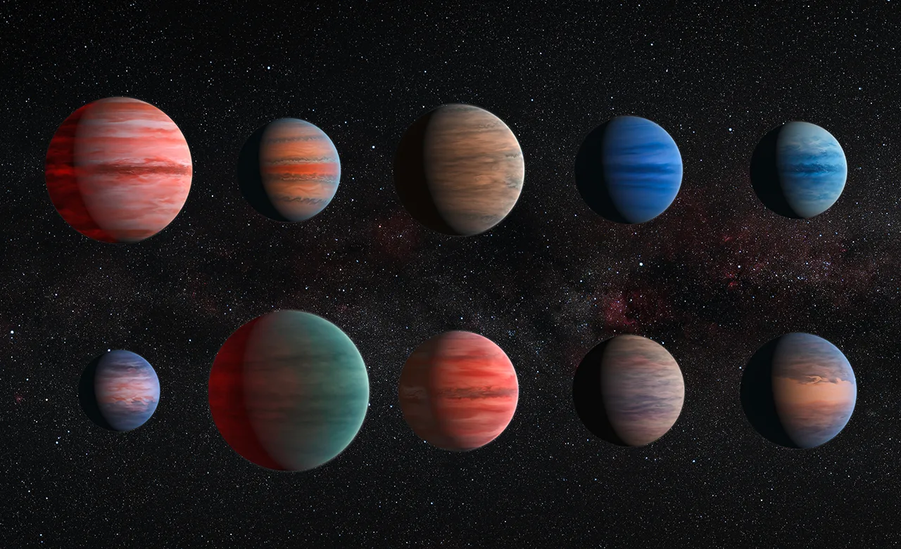
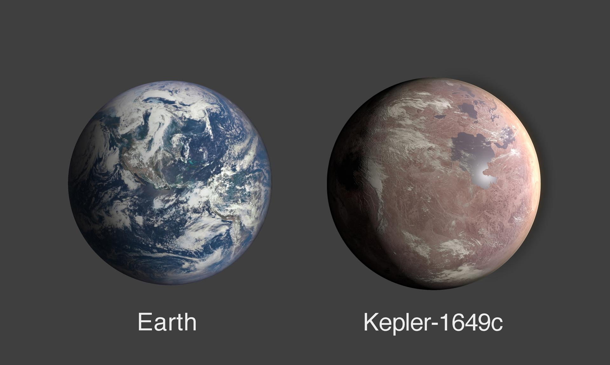
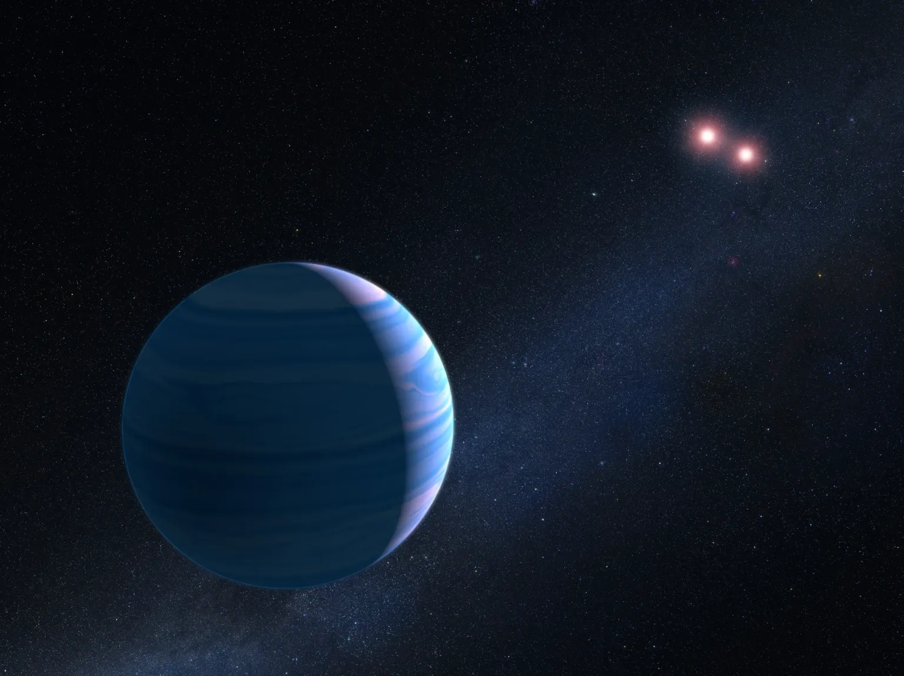
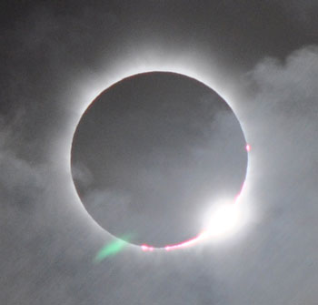
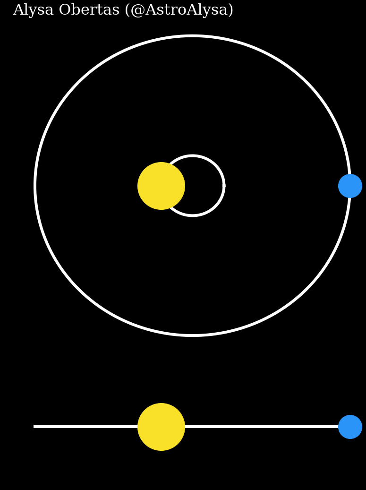

What is an exoplanet
The universe is infinite, so of course there are more planets outside the solar system. This planets are called exoplanets. Most of them orbit stars other than the sun, but some of them don't orbit any star. A lot of this planets are in the milky way, the galaxy we live, but most of them are really far away on other galaxies, it's really far away, the exoplanet closest to the earth proxima centauri b is 4 light years away from the earth, imagine planets in other galaxies



How to find an exoplanet
The exoplanets normally aren't found just by looking at the sky because they are really far away, so astronomers use 5 tecniques to find exoplanets
Transit
A lot of times, planets pass at the front of the star which it orbit, making it shine less, that fenomenon is called transit. When a transit happen in a star that is being observed, astronomers discover a new exoplanet. That is the tecnique used to find most of the exoplanets, right now the humanity has found 4295 planets that way

Radial velocity
A planet is atracted by its star, but the planet also atracts a bit the star, making it move a bit. This movement makes the energy waves of the star, thanks to the doppler effect, change its frequency. Making it possible to detect exoplanets orbiting the star. This method is extremaly effective on detecting exoplanets, with 1091 planets being found with this method

Direct imaging
It's really hard to take pictures of planets, because the stars shine a lot, making it really hard to see the planet in the picture.. But, with the tecnology that the humanity has today we can build shine blockers, who work similar to sunglasses, that can make possible to telescopes take pictures of the exoplanets, and some of them were found using these pictures
Gravitational microlensing
Albert Einstein show the humanity that the space-time is like a fabric that celestial bodies can curve. So some astronomers detect exoplanets by observing the light of the stars and seeing if some unknown celestial body curved it

Astrometry
The atraction of a planet to a star can make it move in visible ways. So using optical instruments some astronomers find planets by observing these movements. However, is really hard to find planets this way, only 3 were
Candidates and confirmed
Do you remember pluto, the dwarf planet that decades ago was considered a planet? Thousands of celestial bodies are found everyday and some of them are exoplanets, but are not confirmed to be, these are called candidates. Some confirmed exoplanets actually after observations, are confirmed to be other type of celestial bodies like pluto in 2006
Types of exoplanets
Terrestrial
Planets similar to Earth made of rocks and metal. Some have water, atmosphere and others signals of being habitable to humans
Super Earths
Planets bigger than the earth, but smaller than Uranus/Neptune
Neptunians
Planets with a Rocky core, but witn a gas mantle, with a similar size to Neptune. These planets normally have atmospheres dominated by Helium or Hydrogen
Giants of gas
Gas planets with the size of Saturn/Jupiter or even bigger. Normally, they are really hot